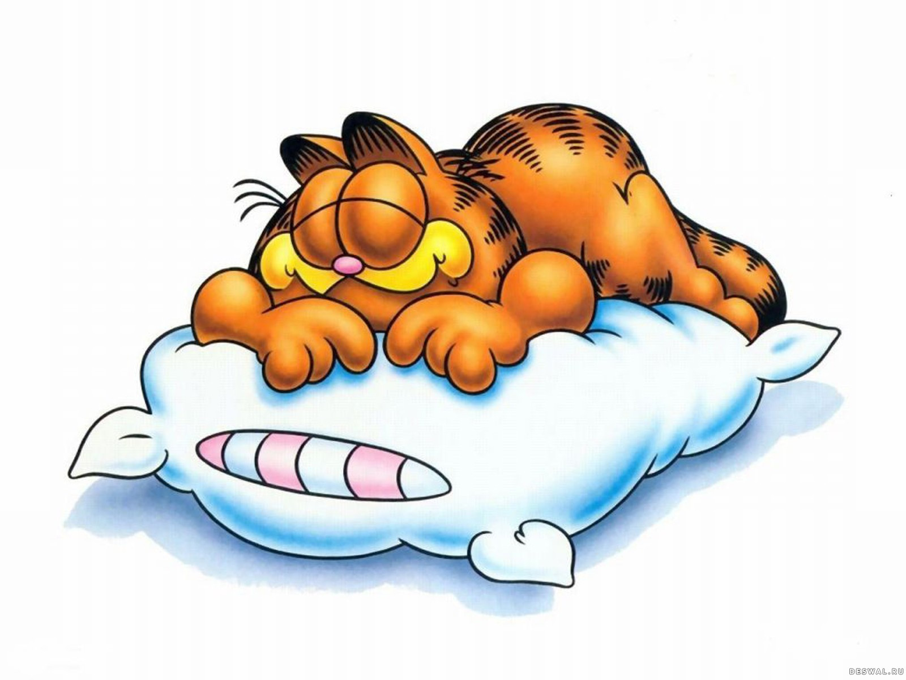

Интересные и серые, пропитанные отголосками прошедшего дня или, напротив, несущие в себе некие знамения, переносящие нас в далекое прошлое или рисующие в сознании картины будущего, приятные или кошмарные — все это наши сны. Их содержание с давних пор являлось загадкой для человека — в разные времена существовали разные толкования снов. Пытаясь узнать значение снов, люди, прежде всего, старались заглянуть в свое будущее, понять, что готовит им судьба. Правильно истолкованный сон мог стать верным предостережением, обещанием радости и благополучия, напротив, предвестником болезни или даже смерти, обещанием семейного счастья или скорой женитьбы. Вариантов предсказания существовало и существует множество, и все они собраны в сонники или толкователи снов. Каким образом сны связаны с событиями, происходящими с человеком наяву? Бодрствуя, каждый из нас получает огромное количество информации, этот поток непрерывен и неиссякаем. Наше сознание вынуждено оставлять в памяти только самые важные и значимые сведения, как бы отфильтровывая все остальное. Тем не менее, человек в мельчайших деталях запоминает все, что происходит с ним в каждый момент времени. Это происходит благодаря работе подсознания, собирающего и анализирующего всю поступающую информацию. Во сне наше подсознание выходит на первый план, возвращая человеку незамеченную им информацию с помощью снов — ярких образных действий, разворачивающихся перед глазами спящего. Именно поэтому значение снов сложно переоценить, хотя и не исключено, что в некоторых случаях их содержание формируется под влиянием ярких впечатлений прошедшего дня, либо является лишь отражением только что произошедших событий. Тем не менее, наши сны остаются неиссякаемыми источниками информации. Чаще всего предсказание, сделанное на их основе, сбывается. Как же разгадать свой сон? Наш сайт «Сонник» создан для того, чтобы помочь вам в этом. Чтобы узнать толкование сна, вам нужно как бы разложить его на составляющие, выделить самые яркие его моменты. После этого необходимо обозначить их одним словом, например, «расставание» или «вечеринка» и найти его в предложенном соннике — толкование снов будет определяться его значением. Однако стоит учитывать, что истинное значение сна раскрывается в совокупности определений наиболее ярких его моментов. Кроме того, стоит обратить внимание на предметы, людей и животных, окружающих вас во сне — вполне вероятно, что они также что-либо символизируют.  В источнике толкуются всего две вариации на тему денег — они или рваные, или найденные. Ничьих денег не бывает даже в воображении. Найденные купюры предостерегают сновидца о том, что стоит быть осторожнее и опасаться порчи. Не следует брать чужое! Любая присвоенная вещь в реальности может стать проклятием для вас и вашей семьи. Не участвуйте в аферах и неблагонадежных мероприятиях, ничем хорошим это не закончится. Порванные предвещают потерю. Обидную и неожиданную. К примеру, вас могут обокрасть. Если вам дают пачку, а вы ее берете в руки — хороший знак! Не хуже, если вы отдаете их. Однако пересчитывать наличные не очень хорошо. Прекратите быть мелочным, иначе не миновать беды. Постарайтесь посмотреть критически на все свои расходы и взаимоотношения с теми, кто вас окружает. Возможно, вы отказали в помощи тому, кто в ней действительно нуждается и это может привести к крупным неприятностям. Заваривать чай – скоро Вы будете наказаны за неблаговидные поступки и горько пожалеете о содеянном; Пить чай с друзьями – Вам надоест благополучная жизнь, Вы захотите испытать новые ощущения, находя радость в помощи и сочувствии друзьям; Осадок в чае – несчастная любовь, неудача в делах; Разлитый чай – домашние огорчения; Обнаружить пустую пачку из-под чая – скоро о Вас начнут сплетничать; Вам очень хочется выпить чаю – незваные гостей. Также см. Чайник Собака означает встречу с друзьями, снег – к заболеванию, свадьба - к неприятностям. Слова на «с» снятся к неожиданности. Возможно скоро вас ждет случайная встреча с судьбой. Неожиданности могут быть разными все зависит от обстоятельств случившихся во сне.
сайт танкистоф